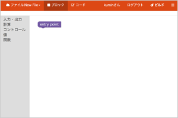
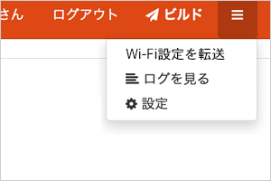
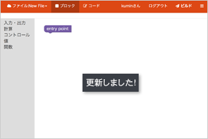
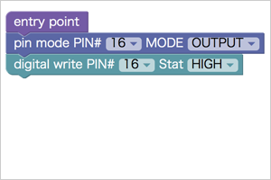

Robip
RobipプログラミングソフトRobip スタートアップガイド

Robip（ロビップ）は、タブレット又はパソコンから、Wifi経由でHaLake（ハレイク）ボードに書き込める新しいプログラミングソフトです。
プログラムをしたら、HaLakeボードが光ったり、動く。おもちゃを買う時代から自分で作る時代へ。
Robipはプログラムの知識が無い方でもすぐ遊べる様に視覚的な操作でプログラミングを作る事ができます。
Robipをつかってみよう
現在サービスはリリース前ですが、テスト画面をご覧頂く事が可能です。
【1】Webブラウザでhttp://robip.halake.comにアクセスして頂くと、プログラミング画面が表示されます。

【2】画面のビルドボタン右のボタンをクリックし、RobipID、Wifi SSID、Wifiパスワードを設定します。

【3】次にrobip-toolをこちらからダウンロードしてください。解凍すると「robip-tool.jar」と表示されるので、クリックしてください。

【4】「robip-tool.jar」を開くと写真の様な画面が表示されます。
【5】HaLakeボードのボタンを押したまま、PCと接続します。※HaLakeボードのボタンをクリックしたまま、PCと接続すると、ボードに書き込むモードになります。

【6】HaLakeボードを接続したら再読み込みボタンをクリックすると、「cu.usbserial-....」という表記が新しく表示されます。※Windowsの方は「ttyusbserial-....」

【7】RobipIDを入力したら「cu.usbserial-....」を設定し書き込みを行なってください。※書き込みが完了したらHaLakeボードはPCと接続を解除してOKです。HaLakeボード側で、設定したWi-Fiに自動接続しデータを取りに行く様になります。

【8】Webサイト（http://robip.halake.com）にもどってもらいプログラミングを行ないます。まず、ブロック画面で、「entry point」が表示されているか確認してください。

【9】Webサイトのブロック画面で、「entry point」が表示されてない場合は、「設定」メニューから「entry point」をドラッグ＆ドロップでキャンバスに移動します。
【10】下記の図を参考にブロックを積み上げてみてください。

【11】右上の「ビルド」ボタンを押してください。これで、プログラムは保存されました。
【12】HaLakeボードにLEDを付けてください。LEDの足が長い方をHaLakeボードの16番、短い方をGNDに入れてください。

【13】HaLakeボードの電源を入れて頂き、15秒程待ってもらうと、プログラムが書き変わります。【10】で作成したプログラムが正しく動けば1秒おきにLEDライトが点滅します。